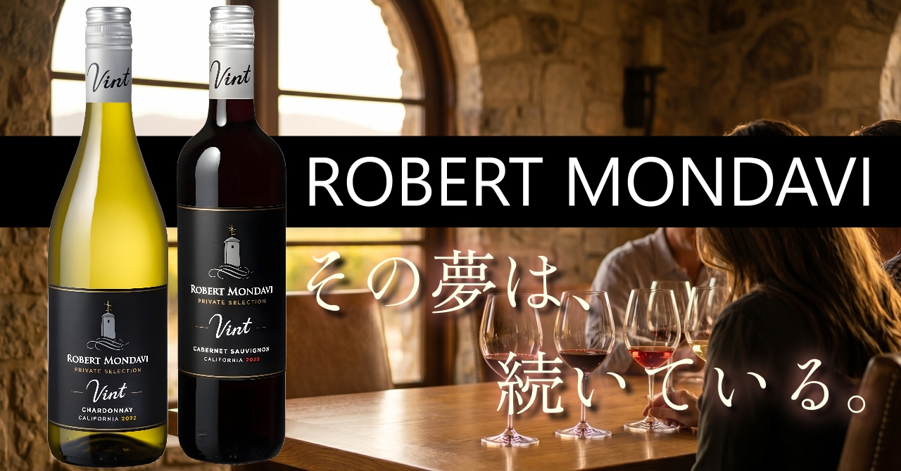

こんにちは、クロフク編集長です。
今回は、カリフォルニアワインの歴史を語るうえで絶対に外せない名前、ロバート・モンダヴィ（Robert Mondavi）をご紹介します。
「ワインは、人々の生活をより豊かにする文化そのものだ」——ロバート・モンダヴィが残したこの言葉は、彼が生涯かけて追い求めた夢を、そのまま表しています。
彼がいなければ、今のカリフォルニアワインはなかった。そう言っても過言ではありません。

こんにちは、クロフク編集長です。
今回は、カリフォルニアワインの歴史を語るうえで絶対に外せない名前、ロバート・モンダヴィ（Robert Mondavi）をご紹介します。
「ワインは、人々の生活をより豊かにする文化そのものだ」——ロバート・モンダヴィが残したこの言葉は、彼が生涯かけて追い求めた夢を、そのまま表しています。
彼がいなければ、今のカリフォルニアワインはなかった。そう言っても過言ではありません。
1966年、ロバート・モンダヴィは当時まだ「テーブルワインの産地」に過ぎなかったナパ・ヴァレーに、自らの名を冠したワイナリーを設立しました。54歳のことです。
当時のカリフォルニアワインは、ヨーロッパの名醸地に比べて格下と見られていた。質より量、安売り競争が当たり前の世界。モンダヴィはその常識に真っ向から反発した。
「カリフォルニアの土壌と太陽は、世界最高のワインを生む可能性を秘めている。なぜ、誰もそれを本気で証明しようとしないのか」
彼は醸造技術の革新に投資し、フランスの名門と対等に渡り合うためにナパの可能性を世界に発信し続けた。その執念が、1976年の「パリの審判」という歴史的事件につながっていく。ブラインドテイスティングで、カリフォルニアワインがフランスの格付けワインを次々と上回ったあの衝撃の日——モンダヴィの夢が、世界に認められた瞬間でした。
2008年、94歳でその生涯を閉じたロバート・モンダヴィ。しかし彼が作り上げたブランドは、今もカリフォルニアワインの象徴として世界中で愛飲されています。
その夢は、続いている。
ロバートモンダヴィのワインラインナップは大きく2つ。ナパ・ヴァレーを中心とした高品質な「プライベートセレクション」シリーズと、日常飲みに最適な「ウッドブリッジ」シリーズです。今回は赤白交互に、編集長セレクションの5本をご紹介します。

プライベートセレクションシリーズの代名詞とも言える赤ワイン。カリフォルニアの豊かな陽光と肥沃な大地が育てたカベルネ・ソーヴィニヨンを100%使用しています。
グラスに注ぐと深いルビーレッド。香りはブラックチェリーやカシス、プラムなどの黒系果実が豊かに広がり、オーク由来のバニラや甘いスパイスが優しく追いかけてくる。口に含むと、しっかりとしたボディとなめらかなタンニンが出迎えてくれます。
後味は長くウォーム。ステーキやラム肉、熟成チーズとの相性は抜群ですが、ハンバーグや肉じゃがのような和洋折衷の料理にも違和感なく寄り添ってくれる懐の深さがあります。
「カリフォルニアの赤といえばこれ」と言い切れるほどの完成度。初めてロバートモンダヴィを飲む方は、ここからスタートしてください。

プライベートセレクションの白ワインを代表する一本。カリフォルニアらしいふくよかさと、程よい爽やかさを兼ね備えたシャルドネです。
色合いはきれいなゴールデンイエロー。グラスを傾けると、桃やマンゴーといったトロピカルフルーツの甘やかな香りがやってきて、その後ろからバニラやバタースコッチのようなオーク由来の温かみが続く。
口当たりはリッチでまろやか。でも、きちんと酸がある。だからしつこくなくて、グラスが空になるのが早い。このバランスこそが、カリフォルニアシャルドネの真骨頂。
シーフードや鶏のクリームソース、パスタとの相性が良く、アペリティフとしてもすっきり楽しめます。「白ワインが得意じゃない」という方にこそ飲んでほしい。きっと、印象が変わります。

「日常にワインを」というコンセプトで生まれたウッドブリッジシリーズから、赤ワインの王様・ピノ・ノワールをご紹介します。
ウッドブリッジのピノノワールは、難しいことを考えずに飲める赤ワイン。色は明るいルビー、香りはチェリーやラズベリー、イチゴといった赤系果実が中心。タンニンは柔らかく、口当たりはシルキー。酸味も穏やかで、とにかく飲みやすい。
「赤ワインって渋いから……」という方が、これを飲んで「あ、こういう赤ワインならいける」となるケースをよく見ます。ピノノワールならではの繊細なフルーティさが、敷居を低くしてくれる。
サーモンのソテー、鴨肉のロースト、きのこ系の料理との相性が特に良い。食事の途中でも、食後にゆっくり飲むのも、どちらにも向いている万能選手です。

ウッドブリッジシリーズの白ワイン代表格。「毎日飲みたい白ワインを、手の届く価格で」——そのコンセプトが、この1本に凝縮されています。
グラスに注ぐと、淡いゴールドの色合い。青リンゴや洋梨のような爽やかな果実香と、柑橘系のさっぱりした香りが広がる。プライベートセレクションに比べてオークのニュアンスは控えめで、よりクリーンでフレッシュな印象です。
飲み口は軽やかで、キリリとした酸がある。暑い季節に冷やして飲むと格別に気持ちいい。食前酒としてはもちろん、魚介の天ぷら、冷奴、白身魚の塩焼きなど、和食にも自然と合わせられる懐の広さが魅力です。
「とにかく毎日飲めるコスパの良い白を探している」という方に、自信を持っておすすめできる1本。冷蔵庫に常備しておきたいワインです。

ここで一本、異端の赤ワインを紹介させてください。
「バーボン・バレルエイジド」——その名の通り、ケンタッキー州の蒸留所で使われた本物のバーボン樽で熟成させたカベルネ・ソーヴィニヨンです。ワインの世界とウイスキーの世界が、1本のボトルの中で交差する。
バーボン樽には、かつてバーボンウイスキーが宿っていたフレーバーが染み込んでいる。バニラ、キャラメル、トーストしたオーク、そかすかなスモーキーさ。それらがカベルネ・ソーヴィニヨンの黒系果実の風味と混ざり合うことで、ほかのワインにはない複雑な味わいが生まれます。
飲んでみると、最初は「あ、これはカベルネだ」とわかる。でもしばらくすると、バーボン由来の甘くスモーキーなニュアンスが鼻の奥でじんわりと広がってくる。「ワインを飲んでいるのに、ウイスキーの記憶がよみがえる」——そんな不思議な体験をさせてくれる1本です。
ウイスキー好きな方が「ワインも飲んでみようかな」と思ったとき、最初の1本として最高。逆に、ワイン好きな方がウイスキーへの扉を開くきっかけにもなる。両方の世界を繋ぐ、革新的なワインです。
ロバート・モンダヴィが1966年にナパ・ヴァレーへ植えた夢は、彼が世を去った後も、静かに実り続けています。
グラスを傾けるたびに、その時間がそっと流れ込んでくる気がします。カリフォルニアの陽光、土の匂い、1本のワインにかけた男の執念——そういうものが、液体の中に溶けている。
その夢の続きが、あなたのグラスの中にあります。